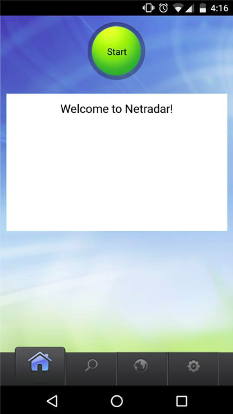

Home
FAQs
Please follow the instruction below to take part in NetRadar - India crowdsourcing user study.
If you have any doubts, either read the FAQs or contact us by sending email to kiran.kumar@aalto.fi or siddharth.rao@aalto.fi.
User Study Instructions
Step 1: Up and Running
Download the application to your Mobile depending on your platform.
Once you open the installed application, you will be in the “Home” tab/screen by default and it looks as below.

Step 2: Go to Settings
Navigate to the “settings” tab at the bottom of the application
as shown in the figure below.

Step 3: Login
Click “login” button.
Note: Logging in is not mandatory, but for the purpose of this user study, please use the login option.

Step 4: Gmail Credentials
You will be prompted to use Gmail login. Login using the following credentials:
username: netradar.india
password : NammaBengaluru
Please do not change the username or password in any case.
Step 5: Passive Mode
To enable passive mode in the “settings” tab, set the radio button to fixed interval.
In the dropdown, select ‘Every 15 minutes’ if you are travelling as shown in the figure below.

Note 1 (Very important): Make sure your WiFi is off/not in use and your GPS is on when
you perform measurements for the purpose of this user study.
Note 2 : Please switch off the background measurement
option if you know that you will not be travelling. (i.e if you know that
you will not move much in the immediate future to save data and switch it back on when you move around)
Step 6: Done!!
Carry on with your work and the App will take care of the Measurements :)
Please make sure to wear the helmet if you are travelling by bike and to wear seat belt if you are travelling by car.
DO NOT USE YOUR MOBILE PHONE if you are riding or driving.
Contact Details:
Kiran Kumar(kiran.kumar@aalto.fi)
Siddharth Rao (siddharth.rao@aalto.fi)